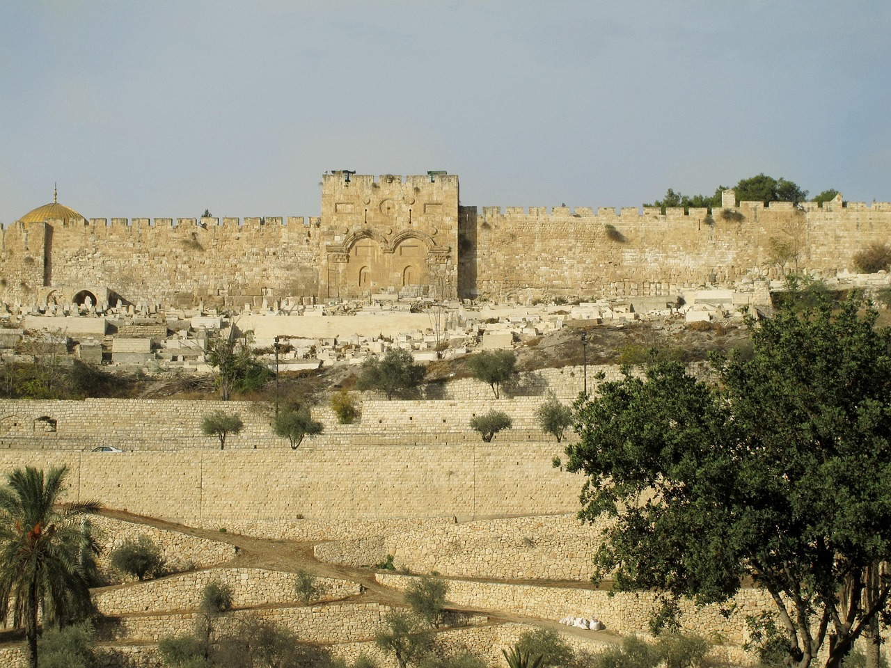

העיר העתיקה
סיור בין החומות, הכותל המערבי ושווקי העיר העתיקה.
לפרטים נוספים →
סיור בין החומות, הכותל המערבי, כנסיית הקבר ושוק העיר העתיקה – חוויה היסטורית מרגשת לכל המשפחה.
- כתובת: שער יפו, ירושלים
- שעות פתיחה: 08:00–19:00
- מחיר: כניסה חופשית